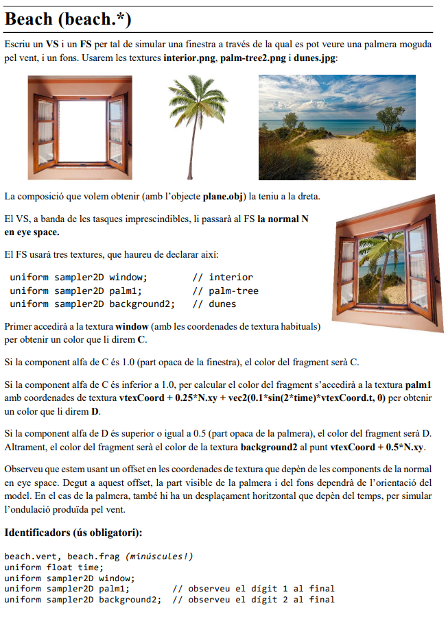
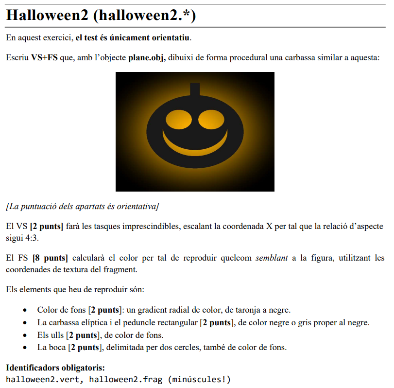
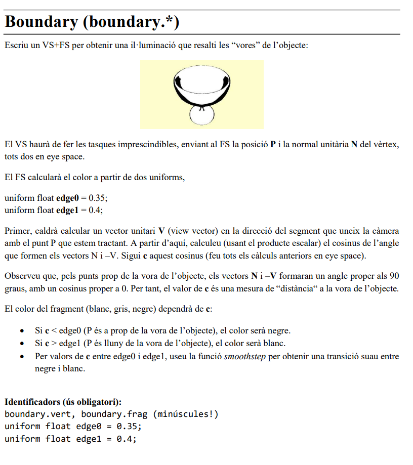

Parcial 1
Tipos de esqueleto
Class A-Esqueleto (PER-VERTEX) (Deformación)
A-Vertex Shader
#version 330 core
// --- INPUTS (from your 3D model) ---
layout (location = 0) in vec3 vertex;
layout (location = 1) in vec3 normal;
layout (location = 2) in vec3 color;
layout (location = 3) in vec2 texCoord;
// --- OUTPUTS (to the Fragment Shader) ---
out vec4 frontColor; // El color FINAL calculado por vértice
out vec2 vtexCoord; // La coordenada de textura
// --- UNIFORMS (from the viewer) ---
uniform mat4 modelViewProjectionMatrix;
uniform mat3 normalMatrix;
void main()
{
vec4 vertex_objectspace = vec4(vertex, 1.0);
vec3 normal_objectspace = normal;
// Calcula la normal en Eye Space
vec3 N = normalize(normalMatrix * normal_objectspace);
// Calcula el color (iluminación simple por Z)
frontColor = vec4(color,1.0) * N.z;
// Pasa la coordenada de textura
vtexCoord = texCoord;
// Calcula la posición final
gl_Position = modelViewProjectionMatrix * vertex_objectspace;
}
NOTA Si te pide modificar la Projection y la Normal Space, se tiene que calcular por si solo:
#version 330 core
// --- INPUTS (from your 3D model) ---
layout (location = 0) in vec3 vertex;
layout (location = 1) in vec3 normal;
layout (location = 2) in vec3 color;
layout (location = 3) in vec2 texCoord;
// --- OUTPUTS (to the Fragment Shader) ---
out vec4 frontColor; // El color FINAL calculado por vértice
out vec2 vtexCoord; // La coordenada de textura
// --- UNIFORMS (from the viewer) ---
uniform mat4 modelViewProjectionMatrix;
uniform mat3 normalMatrix;
void main()
{
//P_object = texture ...
//P_eye_4 = modelViewMatrix * vec4(P_object, 1.0);
// Calcula la posición final
gl_Position = projectionMatrix * P_eye_4;
}
A-Fragment Shader
#version 330 core
// --- INPUT (from the Vertex Shader) ---
in vec4 frontColor; // Recibe el color interpolado
// --- OUTPUT ---
out vec4 fragColor;
void main()
{
// Simplemente asigna el color calculado en el VS
fragColor = frontColor;
}
Class B-Esqueleto (PER-FRAGMENT) (Texturas+Iluminación)
B-Vertex Shader
#version 330 core
// --- INPUTS (from your 3D model) ---
layout (location = 0) in vec3 vertex;
layout (location = 1) in vec3 normal;
layout (location = 2) in vec3 color;
layout (location = 3) in vec2 texCoord;
// --- OUTPUTS (to the Fragment Shader) ---
out vec2 vtexCoord; // Pasa la coordenada de textura
// --- UNIFORMS (from the viewer) ---
uniform mat4 modelViewProjectionMatrix;
void main()
{
// Pasa la coordenada de textura
vtexCoord = texCoord;
// Calcula la posición final
gl_Position = modelViewProjectionMatrix * vec4(vertex, 1.0);
}
B-Fragment Shader
#version 330 core
// --- INPUT (from the Vertex Shader) ---
in vec2 vtexCoord;
// --- OUTPUT ---
out vec4 fragColor;
// --- UNIFORMS (Añadir los que necesites) ---
// (p.ej., uniform sampler2D colorMap;)
void main()
{
// ==============================================================
// DEBES declarar una variable 'finalColor'.
//
// (p.ej., vec4 texColor = texture(colorMap, vtexCoord);)
// (p.ej., vec4 finalColor = texColor;)
// ==============================================================
// (Esta línea usará el 'finalColor' que has definido arriba)
fragColor = finalColor;
}
Ejercicio Tipo 1-Deformación de Geometría
- Objetivo: Cambiar la forma, posición o animación del modelo 3D.
- Palabras Clave: "rotar", "deformar", "proyectar", "estirar", "girar cabeza", "animar".
- Ejemplos:
Look,Dolphin,Dalify,Cubify. - Dónde trabajas: Casi todo el código va en el Vertex Shader (
.vert). - Esqueleto a Usar: Esqueleto 1 (Per-Vertex).
- Por qué: Este esqueleto está diseñado para hacer el trabajo principal en el Vertex Shader (en el bloque
STEP 3 (VS)). La iluminación simple que calcula por defecto (frontColor = ... * N.z) suele ser la que piden estos ejercicios.
Ejemplo 1-Dalify
1.1-Enunciado

Escriu VS+FS per deformar el model en direcció vertical (eix Y en model space), per obtenir
una aparença similar a la d’alguns animals en quadres de Salvador Dalí:
El VS deformarà el model modificant únicament la coordenada Y en model space:
Sigui c el resultat d’interpolar linealment boundingBoxMin.y i boundingBoxMax.y,
segons un paràmetre d’interpolació t, uniform float t = 0.4.
Si la coordenada Y és inferior a c, el VS li aplicarà l’escalat donat per uniform float
scale = 4.0 per tal d’allargar les potes del model. Altrament, no li aplicarà cap escalat,
però sí una translació Δ en Y. Per calcular Δ, observeu que per tenir continuïtat
a y=c, llavors c*scale = c + Δ (aïlleu Δ).
Degut a que no estem recalculant els plans de clipping, és possible que el model surti retallat.
El FS farà les tasques habituals.
1.2-Vertex Shader
#version 330 core
// --- INPUTS (from your 3D model) ---
layout (location = 0) in vec3 vertex;
layout (location = 1) in vec3 normal;
layout (location = 2) in vec3 color;
layout (location = 3) in vec2 texCoord;
// --- OUTPUTS (to the Fragment Shader) ---
out vec4 frontColor; // El color final calculado para este vértice
out vec2 vtexCoord; // La coordenada de textura
// --- UNIFORMS (from the viewer) ---
uniform mat4 modelViewProjectionMatrix;
uniform mat3 normalMatrix;
// --- UNIFORMS (Añadidos para "Dalify") ---
uniform float t = 0.4;
uniform float scale = 4.0;
uniform vec3 boundingBoxMin; // Proporcionado por el viewer
uniform vec3 boundingBoxMax; // Proporcionado por el viewer
void main()
{
// Estas son tus variables iniciales
vec4 vertex_objectspace = vec4(vertex, 1.0);
vec3 normal_objectspace = normal; // No modificamos la normal
// ==============================================================
// == STEP 3 (VS) - CÓDIGO DE DEFORMACIÓN "Dalify"
// ==============================================================
// 1. Calcular 'c' (el punto de corte en Y)
// Interpolar linealmente entre el min y max de Y usando 't'
float c = mix(boundingBoxMin.y, boundingBoxMax.y, t);
// 2. Calcular 'Δ' (Delta, la traslación)
// El enunciado da la fórmula: c*scale = c + Δ
// Aislamos Δ: Δ = c*scale - c
float delta = c * (scale - 1.0);
// 3. Aplicar la deformación (escalar o trasladar)
if (vertex_objectspace.y < c)
{
// Parte de abajo: ESCALAR
vertex_objectspace.y = vertex_objectspace.y * scale;
}
else
{
// Parte de arriba: TRASLADAR
vertex_objectspace.y = vertex_objectspace.y + delta;
}
// ==============================================================
// Calcular la normal en Eye Space (sin modificar)
vec3 N = normalize(normalMatrix * normal_objectspace);
// Calcular el color ("tarea habitual" del esqueleto)
frontColor = vec4(color, 1.0) * N.z;
// Pasar la coordenada de textura
vtexCoord = texCoord;
// Calcular la posición final usando el VÉRTICE DEFORMADO
gl_Position = modelViewProjectionMatrix * vertex_objectspace;
}
1.3-Fragment Shader
#version 330 core
in vec4 frontColor;
out vec4 fragColor;
void main()
{
fragColor = frontColor;
}
Ejemplo 2-Dolphin
2.1-Enunciado

Volem simular l’animació d’un dofí nadant. Per aconseguir-ho cal que el VS deformi el model tenint en
compte les següents indicacions. L’animació durarà un segon i s’anirà repetint en el temps (caldrà fer servir
una funció sinusoïdal amb un període apropiat). Per tal d’aplicar les transformacions corresponents
dividirem el dofí en dues meitats i aplicarem una rotació a cada meitat en funció del temps.
Model: Per al model dolphin.obj amb els següents punts (tingueu en compte que els valors de cada punt
de la figura són en relació a la llargària de la caixa contenidora en direcció Y):
Punts de rotació: La rotació de cada meitat serà al voltant d’un eix paral·lel a l’eix X i que passa per un
punt de la forma (0,y,0), on la y varia segons la meitat. Per la meitat davantera, el punt de rotació serà RD,
i per la meitat posterior el punt de rotació serà RT.
Transició de la deformació: La transformació s’aplicarà de manera suau (combinant amb smoothstep els
vèrtexs originals i els transformats) en l’eix Y des del punt TD1 (on no hi haurà cap transformació) fins al
punt TD2 (on la transformació serà màxima) per la part davantera, i des de TT1 fins a TT2 per la part
posterior.
Angles de la rotació: L’angle de rotació per la part davantera variarà en [-PI/32, PI/32], i per la part
posterior en [-PI/4, 0]. Tingueu en compte que les rotacions seran en sentits oposats, fent que el cap i la cua
pugin i baixin a l’hora amb un petit offset de temps.
Offset entre parts: L’animació de la part davantera començarà 0.25 segons abans que la de la part
posterior. És a dir, si usem time = 0 en l’animació de la part posterior, la part davantera es comportarà com
si time = 0.25.
El color del dofí serà el gris clar (0.8, 0.8, 0.8), al qual el VS aplicarà il·luminació bàsica tenint en compte
la component Z de la normal en eye space.
El FS farà els càlculs imprescindibles per a la visualització. Aquí tens els resultats esperats amb el model
dolphin.obj per a diferents instants de temps (t=0s, 1.25s, 2.75s):
Identificadors (ús obligatori):
dolphin.vert, dolphin.frag
uniform float time;
const float PI = 3.1416;
2.2-Vertex Shader
#version 330 core
layout (location = 0) in vec3 vertex;
layout (location = 1) in vec3 normal;
layout (location = 2) in vec3 color;
layout (location = 3) in vec2 texCoord;
out vec4 frontColor;
out vec2 vtexCoord;
uniform mat4 modelMatrix;
uniform mat4 viewMatrix;
uniform mat4 projectionMatrix;
uniform mat4 modelViewMatrix;
uniform mat4 modelViewProjectionMatrix;
uniform mat4 modelMatrixInverse;
uniform mat4 viewMatrixInverse;
uniform mat4 projectionMatrixInverse;
uniform mat4 modelViewMatrixInverse;
uniform mat4 modelViewProjectionMatrixInverse;
uniform mat3 normalMatrix;
uniform vec4 lightAmbient; // similar a gl_LightSource[0].ambient
uniform vec4 lightDiffuse; // similar a gl_LightSource[0].diffuse
uniform vec4 lightSpecular; // similar a gl_LightSource[0].specular
uniform vec4 lightPosition; // similar a gl_LightSource[0].position
// (sempre estarà en eye space)
uniform vec4 matAmbient; // similar a gl_FrontMaterial.ambient
uniform vec4 matDiffuse; // similar a gl_FrontMaterial.diffuse
uniform vec4 matSpecular; // similar a gl_FrontMaterial.specular
uniform float matShininess; // similar a gl_FrontMaterial.shininess
uniform float time;
uniform vec3 boundingBoxMin;
uniform vec3 boundingBoxMax;
float punt(float x){
return (boundingBoxMax.y -boundingBoxMin.y)*x + boundingBoxMin.y;
}
void main()
{
float pi = acos(-1);
float RT = punt(0.35), RD = punt(0.65);
vec3 pos = vertex;
if(vertex.y <= punt(0.5))
{
float TT2 = punt(0.05), TT1 = punt(0.5);
float factor = smoothstep(TT2,TT1,vertex.y);
float alphaX = min(0.0, -pi/4.0*sin(time));
mat4 T0 = mat4(vec4(1.0, 0.0, 0.0, 0),
vec4(0.0, 1.0, 0.0, -RT),
vec4(0.0, 0.0, 1.0, 0),
vec4(0.0, 0.0, 0.0, 1.0));
mat4 T1 = mat4(vec4(1.0, 0.0, 0.0, 0),
vec4(0.0, 1.0, 0.0, RT),
vec4(0.0, 0.0, 1.0, 0),
vec4(0.0, 0.0, 0.0, 1.0));
mat4 rotX = mat4(vec4(1, 0, 0, 0), vec4(0, cos(alphaX), sin(alphaX), 0), vec4(0, -sin(alphaX), cos(alphaX), 0), vec4(0, 0, 0, 1));
vec3 nv = (T1*rotX*T0*vec4(vertex,1.)).xyz;
pos = mix(nv,vertex,factor);
}
else
{
float TD1 = punt(0.55), TD2 = punt(0.75);
float factor = smoothstep(TD1,TD2,vertex.y);
float alphaX = pi/32.0*sin(time + 0.25);
mat4 T0 = mat4(vec4(1.0, 0.0, 0.0, 0),
vec4(0.0, 1.0, 0.0, -RD),
vec4(0.0, 0.0, 1.0, 0),
vec4(0.0, 0.0, 0.0, 1.0));
mat4 T1 = mat4(vec4(1.0, 0.0, 0.0, 0),
vec4(0.0, 1.0, 0.0, RD),
vec4(0.0, 0.0, 1.0, 0),
vec4(0.0, 0.0, 0.0, 1.0));
mat4 rotX = mat4(vec4(1, 0, 0, 0), vec4(0, cos(alphaX), sin(alphaX), 0), vec4(0, -sin(alphaX), cos(alphaX), 0), vec4(0, 0, 0, 1));
vec3 nv = (T1*rotX*T0*vec4(vertex,1.)).xyz;
pos = mix(nv,vertex,factor);
}
vec3 N = normalize(normalMatrix * normal);
vtexCoord = texCoord;
frontColor = vec4(color,1.0) * N.z;
gl_Position = modelViewProjectionMatrix * vec4(pos, 1.0);
}
2.3-Fragment Shader
#version 330 core
in vec4 frontColor;
out vec4 fragColor;
void main()
{
fragColor = frontColor;
}
Ejemplo 3-Spring
3.1-Enunciado

Escriviu VS+FS que simulin l'expansió i compressió cícliques del model 3D com si fos
una molla (vegeu el vídeo spring.mp4 al zip de l'enunciat).
El VS s'encarregarà de l'animació, que tindrà dues fases que es repetiran cada 3.5 segons.
La primera fase (expansió) tindrà una durada de 0.5 segons i mourà els vèrtexs des de l'origen de coordenades
fins a la seva posició original en model space. Per a calcular la interpolació linial entre aquestes dues
posicions, feu que el paràmetre d'interpolació linial sigui (t/0.5)³, on t és el temps en segons
des de l'inici del periode (per exemple, quan time = 4, t = 0.5).
La segona fase (compressió) tindrà una durada de 3 segons, i mourà els vèrtexs des de la seva posició inicial
en model space cap a l'origen. Ara però volem que els vèrtexs es moguin a velocitat uniforme. Penseu com heu
de calcular el paràmetre d'interpolació lineal, a partir d'un valor t que dins de cada període
estarà dins l'interval [0.5, 3.5).
Un cop calculada la posició del vèrtex en model space, caldrà transformar-lo a clip space com feu usualment.
El color del vèrtex serà el gris que té per components la Z de la normal en eye space.
El FS farà les tasques per defecte.
3.2-Vertex Shader
#version 330 core
// --- INPUTS (del modelo 3D) ---
layout (location = 0) in vec3 vertex;
layout (location = 1) in vec3 normal;
layout (location = 2) in vec3 color;
layout (location = 3) in vec2 texCoord;
// --- OUTPUTS (al Fragment Shader) ---
out vec4 frontColor; // El color final calculado
out vec2 vtexCoord; // La coordenada de textura
// --- UNIFORMS (del viewer) ---
uniform mat4 modelViewProjectionMatrix;
uniform mat3 normalMatrix;
// --- UNIFORMS (Añadido para "Spring") ---
uniform float time; // Necesario para la animación
void main()
{
// Variables de deformación
float interp_factor = 0.0; // El factor de mezcla 't'
vec3 vertex_objectspace = vertex;
vec3 normal_objectspace = normal;
vec3 origen = vec3(0.0, 0.0, 0.0);
// ==============================================================
// == STEP 3 (VS) - LÓGICA DE ANIMACIÓN "Spring" con MIX
// ==============================================================
// 1. Encontrar el tiempo actual dentro del ciclo de 3.5s
float t_period = mod(time, 3.5);
// 2. Comprobar en qué fase estamos
if (t_period < 0.5)
{
// FASE 1: EXPANSIÓN (0.0s a 0.5s)
// El enunciado pide (t/0.5)^2
float t_exp = t_period / 0.5;
interp_factor = pow(t_exp, 2.0);
// Aplicamos la lógica 'mix' (Origen -> Vértice)
vertex_objectspace = mix(origen, vertex, interp_factor);
}
else
{
// FASE 2: COMPRESIÓN (0.5s a 3.5s)
// Mapeamos [0.5, 3.5] a [0.0, 1.0] (Lineal)
float t_comp = (t_period - 0.5) / 3.0;
// Aplicamos la lógica 'mix' (Vértice -> Origen)
// (Esto es lo mismo que 1.0 - t_comp)
vertex_objectspace = mix(vertex, origen, t_comp);
// Guardamos el factor de escala para la normal
interp_factor = 1.0 - t_comp;
}
// 3. Deformar la normal (¡LA PARTE QUE FALTABA!)
// (Igual que en 'Dalify', debemos deformar la normal)
// Añadimos 0.0001 para evitar dividir por cero
normal_objectspace = normal / (interp_factor + 0.0001);
// ==============================================================
// Calcular la normal en Eye Space (con la normal deformada)
vec3 N = normalize(normalMatrix * normal_objectspace);
// Calcular el color:
frontColor = vec4(N.z, N.z, N.z, 1.0);
// Pasar la coordenada de textura
vtexCoord = texCoord;
// Calcular la posición final (con el vértice deformado)
gl_Position = modelViewProjectionMatrix * vec4(vertex_objectspace, 1.0);
}
3.3-Fragment Shader
#version 330 core
in vec4 frontColor;
out vec4 fragColor;
void main()
{
fragColor = frontColor;
}
Ejercicio Tipo 2-Texturas
- Objetivo: Decidir el color de un píxel basándose en texturas, coordenadas, o lógica (
if,distance,fract, etc.). - Palabras Clave:
texture(),sampler2D,colorMap,vtexCoord,if,discard,procedural. - Ejemplos:
Digits,Smile,Flag,Beach,Hunter. - Dónde trabajas: Todo el código va en el Fragment Shader (
.frag). - Esqueleto a Usar: Esqueleto 2 (Per-Fragment).
- Por qué: Necesitas control total por píxel. Tendrás que usar tu "cheatsheet" para añadir
uniforms(comosampler2D) y "snippets" (como "Pasar Normal" si el efecto depende dev_normal_eye, como en "Smile") al esqueleto 2.
Ejemplo 1-Hunter
1.1-Enunciado

Volem simular uns binocles que ens acosten els detalls d'una textura que ocupa tot el
viewport, com en aquestes imatges:
Aquest exercici sols funciona amb l'objecte plane.obj, texturat amb l'escena triada. Per resoldre'l, has d'implementar:
1.Un VS que sols emet les coordenades de textura de cada vèrtex, i les coordenades de cada vèrtex del model, com si ja
estiguessin en coordenades de clipping (val a dir que has de fer servir la identitat com a ModelViewProjectionMatrix.
Us proporcionem un arxiu blur.glsl que conté una funció que heu de fer servir al vostre FS. Aquesta funció mostreja
una textura (s'hi accedeix amb el sampler2D jungla), en les coordenades que rep com paràmetre, però la desenfoca.
Coloregeu els fragments amb el resultat retornat per aquesta funció, obtenint un viewport
omplert per la textura triada, però desenfocada.
Afegirem ara els binocles. Per posicionar-los, farem servir el uniform vec2 mousePositon, que ens dona les coordenades
del ratolí en aquell moment, en píxels, amb l'origen de coordenades a la cantonada inferior esquerra del viewport.
També disposem del uniform vec2 viewport que ens retorna l'amplada i alçada del viewport en píxels. Per una posició
donada del ratolí, la part transparent dels binocles consisteix de dos cercles superposats de radi 100 píxels, centrats en
dos punts 80 píxels a esquerra i dreta del ratolí. La vorera negra dels binocles son la part que cau fora d'aquesta porció
transparent, de dos circumferències de gruix 5 píxels. Afegeix codi al teu shader que dibuixi la vorera, i que estigui
preparat per acolorir els píxels de la porció transparent de forma diferent a la resta. (pista: fixeu-vos que podeu
fer servir les coordenades de textura com a coordenades, i podeu convertir a píxels usant viewport).
Ja sols queda simular l'òptica dels binocles. El uniform float magnific indicarà el factor d'augment que volem que tinguin.
Així, donarem a cada fragment F dins dels binocles el color de la textura en un punt P que es troba entre F i el ratolí,
i tal que la dist(F,ratolí) és igual a magnific*dist(P, ratolí).
1.2-Vertex Shader
#version 330 core
// --- INPUTS (del modelo 3D) ---
layout (location = 0) in vec3 vertex;
layout (location = 1) in vec3 normal; // Lo mantenemos
layout (location = 2) in vec3 color; // Lo mantenemos
layout (location = 3) in vec2 texCoord;
// --- OUTPUTS (al Fragment Shader) ---
out vec2 vtexCoord;
// --- UNIFORMS (del viewer) ---
// No usamos 'modelViewProjectionMatrix'
// El problema pide usar la identidad.
void main()
{
// 1. Pasar la coordenada de textura
vtexCoord = texCoord;
// 2. Usar la posición del vértice como posición de clipping
// (como pide el enunciado)
gl_Position = vec4(vertex, 1.0);
}
1.3-Fragment Shader
#version 330 core
// --- INPUT (del Vertex Shader) ---
in vec2 vtexCoord; // Rango [0, 1]
// --- OUTPUT ---
out vec4 fragColor;
// --- UNIFORMS (Añadidos para "hunter") ---
uniform vec2 mousePosition;
uniform vec2 viewport; // <-- 'blur.glsl' también necesita esto
uniform sampler2D jungla; // <-- 'blur.glsl' también necesita esto
uniform float magnific = 3.0;
// ==============================================================
// == CÓDIGO PEGADO DE blur.glsl [INICIO] ==
// ==============================================================
// adaptat de https://www.shadertoy.com/view/Xltfzj.
// no és realment Gaussià
// **requereix** que hi hagi declarat un sampler2D jungla!
// retorna el color corresponent a les coordenades de textura coords.
vec4 blurImage( in vec2 coords )
{
float Pi = 6.28318530718; // Pi*2
float Directions = 16.0; // BLUR DIRECTIONS (Default 16.0 - More is better but slower)
float Quality = 8.0; // BLUR QUALITY (Default 4.0 - More is better but slower)
float Size = 10.0; // BLUR SIZE (Radius)
vec2 Radius = Size/viewport;
vec4 Color = texture(jungla, coords);
for( float d=0.0; d<Pi; d+=Pi/Directions)
{
float cd = cos(d);
float sd = sin(d);
for(float i=1.0/Quality; i<=1.0; i+=1.0/Quality)
{
Color += texture(jungla, coords+vec2(cd,sd)*Radius*i);
}
}
// Output to screen
Color /= Quality * Directions - 15.0;
return Color;
}
// ==============================================================
// == CÓDIGO PEGADO DE blur.glsl [FIN] ==
// ==============================================================
void main()
{
// ==============================================================
// == LÓGICA DE "hunter" VA AQUÍ ==
// ==============================================================
// 1. Color por defecto: la jungla desenfocada
// Ahora el linker PUEDE encontrar esta función
vec4 finalColor = blurImage(vtexCoord);
// 2. Convertir coordenadas a píxeles
vec2 pixelCoord = vtexCoord * viewport;
// 3. Definir los centros de los binoculares
vec2 centerL = mousePosition + vec2(-80.0, 0.0);
vec2 centerR = mousePosition + vec2( 80.0, 0.0);
// 4. Calcular distancias (en píxeles)
float distL = distance(pixelCoord, centerL);
float distR = distance(pixelCoord, centerR);
// 5. Comprobar si estamos en la VORERA NEGRA (radio 100 a 105)
if ( (distL > 100.0 && distL < 105.0) ||
(distR > 100.0 && distR < 105.0) )
{
finalColor = vec4(0.0, 0.0, 0.0, 1.0); // Negro
}
// 6. Comprobar si estamos en la LENTE (radio < 100)
else if (distL < 100.0 || distR < 100.0)
{
// --- Lógica de Magnificación ---
vec2 M_tex = mousePosition / viewport;
vec2 P_tex = M_tex + (vtexCoord - M_tex) / magnific;
// Muestreamos la textura *original* (nítida) en el punto P
finalColor = texture(jungla, P_tex);
}
// ==============================================================
// --- Asignación Final ---
fragColor = finalColor;
}
Ejemplo 2-Invaders
2.1-Enunciado

Escriviu VS+FS per tal de dibuixar quelcom similar a una pantalla del conegut Space Invaders.
Observeu que la darrera columna de la textura inclou un canó blanc i un escut verd.
El VS farà les tasques imprescindibles.
El FS serà l'encarregat de triar el color del fragment, d'acord amb les coordenades de textura que rebrà del VS,
i que per l'objecte plane estan dins [0,1].
Per tal d'aconseguir la màxima puntuació, caldrà que:
Hi hagi un canó blanc a la part inferior (4 punts)
Hi hagi alguns escuts en una fila per sobre del canó (3 punts)
Hi hagi com a mínim 6 fileres amb els extraterrestres invasors; cada filera mostrarà un únic tipus d'extraterrestre (3 punts).
2.2-Vertex Shader
#version 330 core
// --- INPUTS (del modelo 3D) ---
layout (location = 0) in vec3 vertex;
layout (location = 1) in vec3 normal;
layout (location = 2) in vec3 color;
layout (location = 3) in vec2 texCoord;
// --- OUTPUTS (al Fragment Shader) ---
out vec2 vtexCoord;
// --- UNIFORMS (del viewer) ---
uniform mat4 modelViewProjectionMatrix;
void main()
{
// Pasar la coordenada de textura
vtexCoord = texCoord;
// Calcular la posición final
gl_Position = modelViewProjectionMatrix * vec4(vertex, 1.0);
}
2.3-Fragment Shader
#version 330 core
// --- INPUT (from the Vertex Shader) ---
in vec2 vtexCoord; // Coordinate (s, t) in the range [0, 1]
// --- OUTPUT ---
out vec4 fragColor;
// --- UNIFORMS (Added for "invaders") ---
uniform sampler2D colormap; // The "invaders.png" texture
void main()
{
// ==============================================================
// == "invaders" LOGIC GOES HERE ==
// ==============================================================
// 1. Default color: BLACK (this is our space background)
vec4 finalColor = vec4(0.0, 0.0, 0.0, 1.0);
// The texture is a 4x4 grid
vec2 tileSize = vec2(0.25, 0.25);
vec2 tile = vec2(0.0);
vec2 localCoord = vec2(0.0);
bool draw = true;
// Divide the screen into rows using the T (Y) coordinate
if (vtexCoord.t > 0.8) {
// Row 6 (e.g., blue alien)
// Texture (Col 0, Row 3) -> Tile Y-coord = 3
tile = vec2(0.0, 3.0);
localCoord.s = fract(vtexCoord.s * 12.0); // 12 aliens
localCoord.t = (vtexCoord.t - 0.8) / 0.1; // Map [0.8, 0.9] to [0, 1]
} else if (vtexCoord.t > 0.7) {
// Row 5 (e.g., green alien)
// Texture (Col 1, Row 3) -> Tile Y-coord = 3
tile = vec2(1.0, 3.0);
localCoord.s = fract(vtexCoord.s * 12.0);
localCoord.t = (vtexCoord.t - 0.7) / 0.1;
} else if (vtexCoord.t > 0.6) {
// Row 4 (e.g., other green alien)
// Texture (Col 0, Row 2) -> Tile Y-coord = 2
tile = vec2(0.0, 2.0);
localCoord.s = fract(vtexCoord.s * 12.0);
localCoord.t = (vtexCoord.t - 0.6) / 0.1;
} else if (vtexCoord.t > 0.5) {
// Row 3 (e.g., purple alien)
// Texture (Col 1, Row 2) -> Tile Y-coord = 2
tile = vec2(1.0, 2.0);
localCoord.s = fract(vtexCoord.s * 12.0);
localCoord.t = (vtexCoord.t - 0.5) / 0.1;
} else if (vtexCoord.t > 0.4) {
// Row 2 (e.g., yellow alien)
// Texture (Col 0, Row 1) -> Tile Y-coord = 1
tile = vec2(0.0, 1.0);
localCoord.s = fract(vtexCoord.s * 12.0);
localCoord.t = (vtexCoord.t - 0.4) / 0.1;
} else if (vtexCoord.t > 0.3) {
// Row 1 (e.g., small red alien)
// Texture (Col 0, Row 0) -> Tile Y-coord = 0
tile = vec2(0.0, 0.0);
localCoord.s = fract(vtexCoord.s * 12.0);
localCoord.t = (vtexCoord.t - 0.3) / 0.1;
} else if (vtexCoord.t > 0.2) {
// Row of SHIELDS (green)
tile = vec2(3.0, 0.0);
// --- Centering Logic ---
// 1. Define row/sprite dimensions
float rowHeight = 0.1;
float spriteWidth = 0.1; // To keep a 1:1 aspect ratio
float numShields = 4.0;
// 2. Width of one "zone" (1.0 / 4.0 = 0.25)
float zoneWidth = 1.0 / numShields;
// 3. Get the local t-coordinate (0.0 to 1.0)
localCoord.t = (vtexCoord.t - 0.2) / rowHeight;
// 4. Get the local s-coordinate (0.0 to 1.0)
localCoord.s = fract(vtexCoord.s * numShields);
// 5. Calculate ratios for centering
// How much of the zone does the sprite fill? (0.1 / 0.25 = 0.4)
float fill_ratio = spriteWidth / zoneWidth;
// How much padding on *one side*? ( (1.0 - 0.4) / 2.0 = 0.3 )
float padding_ratio = (1.0 - fill_ratio) / 2.0;
// 6. Check if the pixel is in the drawable "window"
// (i.e., not in the left 30% or right 30% padding)
if (localCoord.s > padding_ratio && localCoord.s < (1.0 - padding_ratio))
{
// It is in the window [0.3, 0.7].
// We must re-map this range back to [0.0, 1.0] for the sprite.
// 1. Shift it: [0.3, 0.7] -> [0.0, 0.4]
float shifted_s = localCoord.s - padding_ratio;
// 2. Scale it: [0.0, 0.4] -> [0.0, 1.0]
localCoord.s = shifted_s / fill_ratio;
} else {
// We are in the padding (the empty 30% on left or right)
draw = false;
}
} else if (vtexCoord.t > 0.1) {
// Row of the CANNON (white)
// Texture (Col 3, Row 1) -> Tile Y-coord = 1
tile = vec2(3.0, 1.0);
if (vtexCoord.s > 0.45 && vtexCoord.s < 0.55) {
localCoord.s = (vtexCoord.s - 0.45) / 0.10;
localCoord.t = (vtexCoord.t - 0.1) / 0.10;
} else {
draw = false;
}
} else {
// Empty space at the bottom
draw = false;
}
// 2. If 'draw' is true, we attempt to draw a sprite.
if (draw) {
// ==================================================
// == CHANGE IS HERE ==
// The line 'localCoord.t = 1.0 - localCoord.t;'
// was REMOVED to fix the upside-down sprites.
// ==================================================
// Calculate the final coordinate to sample from the texture
vec2 sampleCoord = (tile + localCoord) * tileSize;
// Read the texture color
vec4 texColor = texture(colormap, sampleCoord);
// Check the brightness
// (The texture atlas has a black background)
float brightness = texColor.r + texColor.g + texColor.b;
if (brightness > 0.1) {
// If it's NOT the black background,
// update finalColor to the sprite color.
finalColor = texColor;
}
// If it IS the black background (brightness < 0.1),
// we do nothing. finalColor stays black.
}
// If 'draw' is false, we do nothing.
// finalColor stays black from the beginning.
// ==============================================================
// --- Final Assignment ---
fragColor = finalColor;
}
Ejemplo 3-Flag
3.1-Enunciado

Escriu VS+FS que, amb l’objecte plane.obj, dibuixi de forma procedural una bandera similar a aquesta:
El VS farà les tasques imprescindibles, escalant la coordenada Y per tal que la relació d’aspecte sigui 2:1.
El FS calcularà el color per tal reproduir quelcom semblant a la figura.
3.2-Vertex Shader
#version 330 core
// --- INPUTS (from your 3D model) ---
layout (location = 0) in vec3 vertex;
layout (location = 1) in vec3 normal;
layout (location = 2) in vec3 color;
layout (location = 3) in vec2 texCoord;
// --- OUTPUTS (to the Fragment Shader) ---
out vec2 vtexCoord;
// --- UNIFORMS (from the viewer) ---
uniform mat4 modelViewProjectionMatrix;
void main()
{
vtexCoord = texCoord;
// Create a new vertex variable
vec4 new_vertex = vec4(vertex, 1.0);
// Scale the Y coordinate by 0.5 to make the
// 1x1 plane into a 1x0.5 (2:1 aspect ratio) rectangle
new_vertex.y = new_vertex.y * 0.5;
// Calculate the final position using the MODIFIED vertex
gl_Position = modelViewProjectionMatrix * new_vertex;
}
3.3-Fragment Shader
#version 330 core
// --- INPUT (del Vertex Shader) ---
in vec2 vtexCoord;
// --- OUTPUT ---
out vec4 fragColor;
// --- CONSTANTS (Definimos los colores y formas) ---
const vec4 COLOR_GREEN = vec4(0.0, 1.0, 0.0, 1.0);
const vec4 COLOR_YELLOW = vec4(1.0, 1.0, 0.0, 1.0);
const vec4 COLOR_BLUE = vec4(0.0, 0.0, 1.0, 1.0);
// --- Constantes del Círculo Azul ---
const float BLUE_CIRCLE_RADIUS = 0.12;
const vec2 BLUE_CENTER_TEX = vec2(0.5, 0.5); // Centro de la pantalla
// --- Constantes de la Banda Amarilla ---
const float BAND_OUTER_RADIUS = 0.20; // Más grande que el azul (0.12)
const float BAND_THICKNESS = 0.02;
const vec2 BAND_CENTER_TEX = vec2(0.5, 0.70); // Centro movido a T=0.7
void main()
{
// a. Empezar con el fondo verde
vec4 finalColor = COLOR_GREEN;
// b. Dibujar el rectángulo amarillo
if (vtexCoord.s > 0.15 && vtexCoord.s < 0.85 && vtexCoord.t > 0.15 && vtexCoord.t < 0.85) {
finalColor = COLOR_YELLOW;
}
// --- 2. Círculo Azul (Cálculo separado) ---
// Centramos y corregimos el aspecto para el círculo azul
float centered_s_blue = vtexCoord.s - BLUE_CENTER_TEX.s;
float centered_t_blue = (vtexCoord.t - BLUE_CENTER_TEX.t) * 0.5;
float dist_blue = length(vec2(centered_s_blue, centered_t_blue));
// Dibujamos el círculo azul
if (dist_blue < BLUE_CIRCLE_RADIUS) finalColor = COLOR_BLUE;
// --- 3. Banda Amarilla (Cálculo separado) ---
// Centramos y corregimos el aspecto para la banda amarilla
float centered_s_band = vtexCoord.s - BAND_CENTER_TEX.s;
float centered_t_band = (vtexCoord.t - BAND_CENTER_TEX.t) * 0.5;
float dist_band = length(vec2(centered_s_band, centered_t_band));
// Calculamos el radio interior
float band_inner_radius = BAND_OUTER_RADIUS - BAND_THICKNESS;
// Comprobamos si el píxel está en el "anillo"
if (dist_band < BAND_OUTER_RADIUS && dist_band > band_inner_radius)
{
// "Dibujar solo si el píxel está en la mitad inferior de la pantalla
if (vtexCoord.t < 0.5) finalColor = COLOR_YELLOW;
}
// --- Asignación Final ---
fragColor = finalColor;
}
Ejemplo 4-Beach
4.1-Enunciado

Escriu un VS i un FS per tal de simular una finestra a través de la qual es pot veure una palmera moguda pel vent, i un fons.
La composició que volem obtenir (amb l’objecte plane.obj) la teniu a la dreta.
El VS, a banda de les tasques imprescindibles, li passarà al FS la normal N
en eye space.
El FS usarà tres textures, que haureu de declarar així:
uniform sampler2D window; // interior
uniform sampler2D palm1; // palm-tree
uniform sampler2D background2; // dunes
Primer accedirà a la textura window (amb les coordenades de textura habituals)
per obtenir un color que li direm C.
Si la component alfa de C és 1.0 (part opaca de la finestra), el color del fragment serà C.
Si la component alfa de C és inferior a 1.0, per calcular el color del fragment s’accedirà a la textura palm1
amb coordenades de textura vtexCoord + 0.25*N.xy + vec2(0.1*sin(2*time)*vtexCoord.t, 0) per obtenir
un color que li direm D.
Si la component alfa de D és superior o igual a 0.5 (part opaca de la palmera), el color del fragment serà D.
Altrament, el color del fragment serà el color de la textura background2 al punt vtexCoord + 0.5*N.xy.
Observeu que estem usant un offset en les coordenades de textura que depèn de les components de la normal
en eye space. Degut a aquest offset, la part visible de la palmera i del fons dependrà de l’orientació del
model. En el cas de la palmera, també hi ha un desplaçament horitzontal que depèn del temps, per simular
l’ondulació produïda pel vent.
4.2-Vertex Shader
#version 330 core
// --- INPUTS (from your 3D model) ---
layout (location = 0) in vec3 vertex;
layout (location = 1) in vec3 normal;
layout (location = 2) in vec3 color;
layout (location = 3) in vec2 texCoord;
// --- OUTPUTS (to the Fragment Shader) ---
out vec2 vtexCoord; // Pasa la coordenada de textura
out vec3 v_normal_eye;
// --- UNIFORMS (from the viewer) ---
uniform mat4 modelViewProjectionMatrix;
uniform mat3 normalMatrix;
void main()
{
// Pasa la coordenada de textura
vtexCoord = texCoord;
// Pasar la normal en Eye Space al fragment shader
v_normal_eye = normalize(normalMatrix*normal);
// Calcula la posición final
gl_Position = modelViewProjectionMatrix * vec4(vertex, 1.0);
}
4.3-Fragment Shader
#version 330 core
// --- INPUT (from the Vertex Shader) ---
in vec2 vtexCoord;
in vec3 v_normal_eye;
// --- OUTPUT ---
out vec4 fragColor;
// --- UNIFORMS ---
uniform float time;
uniform sampler2D window;
uniform sampler2D palm1; // observeu el dígit 1 al final
uniform sampler2D background2; // observeu el dígit 2 al final
// Definicion colores
const vec4 COLOR_BLACK = vec4(0.0, 0.0, 0.0, 1.0);
void main()
{
vec3 N = normalize(v_normal_eye);
vec4 finalColor = COLOR_BLACK;
// textura window (amb les coordenades de textura habituals)
vec4 C = texture(window, vtexCoord);
// Si Alpha de C = 1.0, finalColor = C
if (C.a == 1.0) finalColor = C;
else if (C.a < 1.0) {
vec2 term2 = 0.25 * N.xy;
vec2 term3 = vec2(0.1*sin(2.0*time)*vtexCoord.t, 0.0);
vec2 palmCoord = vtexCoord + term2 + term3;
vec4 D = texture(palm1, palmCoord);
if (D.a >= 0.5) finalColor = D;
else {
vec2 backCoords = vtexCoord + 0.5 * N.xy;
finalColor = texture(background2, backCoords);
}
}
fragColor = finalColor;
}
Ejemplo 5-Halloween2
3.1-Enunciado

Escriu VS+FS que, amb l’objecte plane.obj, dibuixi de forma procedural una carbassa similar a aquesta:
[La puntuació dels apartats és orientativa]
El VS [2 punts] farà les tasques imprescindibles, escalant la coordenada X per tal que la relació d’aspecte
sigui 4:3.
El FS [8 punts] calcularà el color per tal de reproduir quelcom semblant a la figura, utilitzant les
coordenades de textura del fragment.
Els elements que heu de reproduir són:
1. Color de fons [2 punts]: un gradient radial de color, de taronja a negre.
2. La carbassa elíptica i el peduncle rectangular [2 punts], de color negre o gris proper al negre.
3. Els ulls [2 punts], de color de fons.
4. La boca [2 punts], delimitada per dos cercles, també de color de fons.
3.2-Vertex Shader
#version 330 core
// --- INPUTS (from your 3D model) ---
layout (location = 0) in vec3 vertex;
layout (location = 1) in vec3 normal;
layout (location = 2) in vec3 color;
layout (location = 3) in vec2 texCoord;
// --- OUTPUTS (to the Fragment Shader) ---
out vec2 vtexCoord;
// --- UNIFORMS (from the viewer) ---
uniform mat4 modelViewProjectionMatrix;
void main()
{
vtexCoord = texCoord;
// Create a new vertex variable
vec4 new_vertex = vec4(vertex, 1.0);
// Scale the X coordinate by 4/3 to make the
// 1x1 plane into a (4:3 aspect ratio) rectangle
new_vertex.x = new_vertex.x * float(4.0/3.0);
// Calculate the final position using the MODIFIED vertex
gl_Position = modelViewProjectionMatrix * new_vertex;
}
3.3-Fragment Shader
#version 330 core
// --- INPUT (del Vertex Shader) ---
in vec2 vtexCoord;
// --- OUTPUT ---
out vec4 fragColor;
// --- CONSTANTS (Definimos los colores y formas) ---
const vec4 COLOR_BLACK = vec4(0.0, 0.0, 0.0, 1.0);
const vec4 COLOR_GRAY = vec4(0.25, 0.25, 0.25, 1.0);
const vec4 COLOR_ORANGE = vec4(1.0, 0.75, 0.0, 1.0);
// --- Constantes del Círculo Azul ---
const float BLUE_CIRCLE_RADIUS = 0.12;
const vec2 BLUE_CENTER_TEX = vec2(0.5, 0.5); // Centro de la pantalla
void main()
{
// 0. Preparar variables
vec2 center = vec2(0.5, 0.5);
vec2 coord;
coord.x = (vtexCoord.s - center.s);
coord.y = vtexCoord.t - center.t;
float dist = length(coord);
// coord va de -0,5 a 0,5, siendo 0.0 el mínimo
// 1. Empezar con el fondo negro
vec4 finalColor = COLOR_BLACK;
// 2. Hacer difuminado circulo naranja
float radius = 0.5; // Radio del fundido
float t = clamp(dist / radius, 0.0, 1.0);
finalColor = mix(COLOR_ORANGE, COLOR_BLACK, t);
// 3. Círculo cara
float faceRadius = 0.3; // Radio del círculo
bool faceCircle = dist < faceRadius;
// 4. Hat
float min_X = -0.025;
float min_Y = 0.3;
float max_X = 0.025;
float max_Y = 0.4;
bool hat = coord.s > min_X && coord.s < max_X &&
coord.t > min_Y && coord.t < max_Y;
// 5. Ojos
vec2 left_eye_center = vec2(-0.1, 0.12);
float eye_radius = 0.075;
float distance_left = distance(coord, left_eye_center);
bool leftEye = distance_left < eye_radius;
vec2 right_eye_center = vec2(0.1, 0.12);
float distance_right = distance(coord, right_eye_center);
bool rightEye = distance_right < eye_radius;
// 6. Mouth
vec2 centerM = vec2(0.0, 0.0);
float outer_radiusM = 0.2;
float distM = distance(coord, centerM);
vec2 centerM2 = vec2(0.0, 0.05);
float outer_radiusM2 = 0.25;
float distM2 = distance(coord, centerM2);
bool semiCircle1 = distM < outer_radiusM && coord.y < 0.0;
bool semiCircle2 = distM2 < outer_radiusM && coord.y < 0.0;
bool mouth = semiCircle1 && !semiCircle2;
// 7. pintar
bool isBody = faceCircle || hat;
bool isHole = leftEye || rightEye || mouth;
if (isBody && !isHole) finalColor = COLOR_GRAY;
fragColor = finalColor;
}
Ejercicio Tipo 3-Iluminación (Phong)
- Objetivo: Calcular el modelo de luz de Phong (Ambiental, Difuso, Especular) para cada píxel.
- Palabras Clave:
Phong,Iluminación,N,L,V,R,matDiffuse,lightSpecular, etc. - Ejemplos:
Nlights,LightChange,8lights. - Dónde trabajas: El cálculo principal va en el Fragment Shader (
.frag). - Esqueleto a Usar: Esqueleto 2 (Per-Fragment).
- Por qué: Este es el caso más claro para el Esqueleto 2. Debes usar tu "cheatsheet" para añadir los "snippets" obligatorios:
- "Pasar Normal" (para obtener
v_normal_eyepara N). - "Pasar Posición del Ojo" (para obtener
v_position_eyepara V y L). - Todos los
uniformsde materiales (mat...) y luces (light...) que necesites.
- "Pasar Normal" (para obtener
Ejemplo 1-8lights
1.1-Enunciado

Escriu VS+FS per aplicar ilꞏluminació de Phong per fragment, amb 8 llums fixos respecte l’escena.
Concretament, les posicions dels llums en world space coincidiran amb els 8 vèrtexs de la capsa
contenidora de l’escena (useu boundingBoxMin i boundingBoxMax per obtenir la posició d’aquests
llums).
El VS farà les tasques habituals i passarà al FS les dades necessàries (vèrtex i normal) pel càlcul
d’ilꞏluminació.
El FS calcularà el color del fragment acumulant la contribució dels 8 llums. Per evitar imatges massa
saturades, useu per cada llum l’expressió
∑ Kd Id (NꞏLi)/𝟐 + Ks Is (RiꞏV)s
la qual ignora la contribució ambient i divideix la contribució difosa per 𝟐.
Pels llums i material usa les propietats habituals (matDiffuse, matSpecular, lightDiffuse, lightSpecular...).
Vigila amb l’eficiència, per exemple, mira de no fer crides innecessàries a normalize().
1.2-Vertex Shader
#version 330 core
// --- INPUTS (from your 3D model) ---
layout (location = 0) in vec3 vertex;
layout (location = 1) in vec3 normal;
layout (location = 2) in vec3 color;
layout (location = 3) in vec2 texCoord;
// --- OUTPUTS (to the Fragment Shader) ---
out vec2 vtexCoord;
out vec3 v_normal_eye; // Added from cheatsheet
out vec3 v_position_eye; // Added from cheatsheet
// --- UNIFORMS (from the viewer) ---
// We need these for the snippets
uniform mat3 normalMatrix; // Added from cheatsheet
uniform mat4 modelViewMatrix; // Added from cheatsheet
uniform mat4 projectionMatrix; // Added from cheatsheet
void main()
{
// Pass the texture coordinate
vtexCoord = texCoord;
// --- "Pass Eye Position" Logic ---
vec4 pos_eye_4 = modelViewMatrix * vec4(vertex, 1.0);
v_position_eye = vec3(pos_eye_4);
// --- "Pass Normal" Logic ---
v_normal_eye = normalize(normalMatrix * normal);
// --- "Pass Eye Position" Logic (continued) ---
gl_Position = projectionMatrix * pos_eye_4;
}
1.3-Fragment Shader
#version 330 core
// --- INPUT (from the Vertex Shader) ---
in vec2 vtexCoord;
in vec3 v_normal_eye; // Added from cheatsheet
in vec3 v_position_eye; // Added from cheatsheet
// --- OUTPUT ---
out vec4 fragColor;
// --- UNIFORMS (Added for "8lights") ---
// Standard lighting uniforms (from cheatsheet)
uniform vec4 lightDiffuse;
uniform vec4 lightSpecular;
uniform vec4 matDiffuse;
uniform vec4 matSpecular;
uniform float matShininess;
// Uniforms to get light positions
uniform vec3 boundingBoxMin;
uniform vec3 boundingBoxMax;
uniform mat4 viewMatrix; // To convert lights from World to Eye space
void main()
{
// ==============================================================
// == STEP 3 (FS) - "8lights" Logic
// ==============================================================
// --- a. Initialize ---
// Start with black, as the formula ignores ambient
vec4 finalColor = vec4(0.0, 0.0, 0.0, 1.0);
// --- b. Define the 8 light positions in World Space ---
// (We get these from the bounding box corners)
vec3 lightPos_world[8];
lightPos_world[0] = vec3(boundingBoxMin.x, boundingBoxMin.y, boundingBoxMin.z); // 0
lightPos_world[1] = vec3(boundingBoxMax.x, boundingBoxMin.y, boundingBoxMin.z); // 1
lightPos_world[2] = vec3(boundingBoxMin.x, boundingBoxMax.y, boundingBoxMin.z); // 2
lightPos_world[3] = vec3(boundingBoxMax.x, boundingBoxMax.y, boundingBoxMin.z); // 3
lightPos_world[4] = vec3(boundingBoxMin.x, boundingBoxMin.y, boundingBoxMax.z); // 4
lightPos_world[5] = vec3(boundingBoxMax.x, boundingBoxMin.y, boundingBoxMax.z); // 5
lightPos_world[6] = vec3(boundingBoxMin.x, boundingBoxMax.y, boundingBoxMax.z); // 6
lightPos_world[7] = vec3(boundingBoxMax.x, boundingBoxMax.y, boundingBoxMax.z); // 7
// --- c. Get N and V (constants for all lights) ---
vec3 N = normalize(v_normal_eye);
vec3 V = normalize(-v_position_eye); // Vector to viewer
// --- d. Start the loop ---
for (int i = 0; i < 8; i++)
{
// --- e. Transform this light's pos to Eye Space ---
vec3 lightPos_eye = vec3(viewMatrix * vec4(lightPos_world[i], 1.0));
// --- f. Calculate L and R for this light ---
vec3 L = normalize(lightPos_eye - v_position_eye);
vec3 R = reflect(-L, N);
// --- g. Calculate Diffuse & Specular (per formula) ---
float NdotL = max(0.0, dot(N, L));
// Diffuse term (divided by 2)
vec4 dif = (matDiffuse * lightDiffuse * NdotL) / 2.0;
// Specular term
vec4 spec = vec4(0.0);
if (NdotL > 0.0) // only add specular if light hits
{
float RdotV = pow(max(0.0, dot(R, V)), matShininess);
spec = matSpecular * lightSpecular * RdotV;
}
// --- h. Accumulate ---
finalColor += dif + spec;
}
finalColor.a = 1.0; // Ensure alpha is 1
// ==============================================================
// --- Final Assignment ---
fragColor = finalColor;
}
Ejemplo 2-Nlights
2.1-Enunciado

Escriviu VS+FS per aplicar il·luminació de Phong per fragment, amb n llums fixos respecte la càmera, on n
és un uniform int n=4. Aquí tens l'esfera amb n=1-5 llums:
Aquí la teniu:
Nlights (nlights.*)
Escriviu VS+FS per aplicar il·luminació de Phong per fragment, amb n llums fixos respecte la càmera,
on n és un uniform int n=4. Aquí tens l'esfera amb n=1-5 llums:
[Imatges de 5 esferes il·luminades progressivament per més llums]
Els llums estaran situats al voltant d'un cercle de radi 10 situat al pla Z=0 de la càmera i centrat a la càmera.
El primer llum estarà situat al punt de coordenades eye space (10, 0, 0), i la resta estaran equidistribuïts
seguint el cercle, com es mostra a la figura per n=1-3 llums:
El VS farà les tasques habituals i passarà al FS les dades necessàries (vèrtex i normal) pel càlcul d'il·luminació.
El FS calcularà el color del fragment acumulant la contribució dels n llums. Per evitar imatges massa saturades, useu l'expressió ...
Aquí teniu la copa amb n=1,3,5 llums:[Imatges d'una copa renderitzada amb 1, 3 i 5 llums]Vigila amb l'eficiència,
per exemple, mira de no fer crides innecessàries a normalize().
Identificadors obligatoris:
uniform int n = 4;
const float pi = 3.141592;
2.2-Vertex Shader
#version 330 core
// --- INPUTS (from your 3D model) ---
layout (location = 0) in vec3 vertex;
layout (location = 1) in vec3 normal;
layout (location = 2) in vec3 color;
layout (location = 3) in vec2 texCoord;
// --- OUTPUTS (to the Fragment Shader) ---
out vec2 vtexCoord;
out vec3 v_normal_eye; // <-- From "Pass Normal"
out vec3 v_position_eye; // <-- From "Pass Eye Position"
// --- UNIFORMS (from the viewer) ---
// We need these for the snippets
uniform mat3 normalMatrix; // <-- From "Pass Normal"
uniform mat4 modelViewMatrix; // <-- From "Pass Eye Position"
uniform mat4 projectionMatrix; // <-- From "Pass Eye Position"
void main()
{
// Pass the texture coordinate
vtexCoord = texCoord;
// --- "Pass Eye Position" Logic ---
vec4 pos_eye_4 = modelViewMatrix * vec4(vertex, 1.0);
v_position_eye = vec3(pos_eye_4);
// --- "Pass Normal" Logic ---
v_normal_eye = normalMatrix * normal;
// --- "Pass Eye Position" Logic (continued) ---
gl_Position = projectionMatrix * pos_eye_4;
}
2.3-Fragment Shader
#version 330 core
// --- INPUT (from the Vertex Shader) ---
in vec2 vtexCoord;
in vec3 v_normal_eye; // <-- From "Pass Normal"
in vec3 v_position_eye; // <-- From "Pass Eye Position"
// --- UNIFORMS (Add as needed) ---
// Problem-specific uniforms
uniform int n = 4;
const float pi = 3.141592;
// Standard lighting uniforms (from cheatsheet)
uniform vec4 lightDiffuse;
uniform vec4 lightSpecular;
uniform vec4 matDiffuse;
uniform vec4 matSpecular;
uniform float matShininess;
// --- OUTPUT ---
out vec4 fragColor;
void main()
{
// ==============================================================
// == STEP 3 (FS) - "Nlights" Logic
// ==============================================================
// --- a. Initialize ---
// Start with black, since there is no ambient term
vec4 finalColor = vec4(0.0, 0.0, 0.0, 1.0);
// --- b. Get N and V (constants for all lights) ---
vec3 N = normalize(v_normal_eye);
vec3 V = normalize(-v_position_eye); // Vector to viewer
// --- c. Get the formula's divisor ---
float sqrt_n = sqrt(float(n));
// --- d. Start the loop ---
for (int i = 0; i < n; i++)
{
// --- e. Calculate this light's position ---
float angle = 2.0 * pi * float(i) / float(n);
vec3 lightPos_eye = vec3(10.0 * cos(angle), 10.0 * sin(angle), 0.0);
// --- f. Calculate L and R for this light ---
vec3 L = normalize(lightPos_eye - v_position_eye);
vec3 R = reflect(-L, N);
// --- g. Calculate Diffuse & Specular (per formula) ---
float NdotL = max(0.0, dot(N, L));
// Diffuse term (divided by sqrt(n))
vec4 dif = (matDiffuse * lightDiffuse * NdotL) / sqrt_n;
// Specular term
vec4 spec = vec4(0.0);
if (NdotL > 0.0) // only add specular if light hits
{
float RdotV = pow(max(0.0, dot(R, V)), matShininess);
spec = matSpecular * lightSpecular * RdotV;
}
// --- h. Accumulate ---
finalColor += dif + spec;
}
finalColor.a = 1.0; // Ensure alpha is 1
// ==============================================================
// --- Final Assignment ---
fragColor = finalColor;
}
Ejemplo 3-Boundary
3.1-Enunciado

Escriu un VS+FS per obtenir una il·luminació que resalti les “vores” de l’objecte:
El VS haurà de fer les tasques imprescindibles, enviant al FS la posició P i la normal unitària N del vèrtex,
tots dos en eye space.
El FS calcularà el color a partir de dos uniforms,
uniform float edge0 = 0.35;
uniform float edge1 = 0.4;
Primer, caldrà calcular un vector unitari V (view vector) en la direcció del segment que uneix la càmera
amb el punt P que estem tractant. A partir d’aquí, calculeu (usant el producte escalar) el cosinus de l’angle
que formen els vectors N i –V. Sigui c aquest cosinus (feu tots els càlculs anteriors en eye space).
Observeu que, pels punts prop de la vora de l’objecte, els vectors N i –V formaran un angle proper als 90
graus, amb un cosinus proper a 0. Per tant, el valor de c és una mesura de “distància“ a la vora de l’objecte.
El color del fragment (blanc, gris, negre) dependrà de c:
Si c < edge0 (P és a prop de la vora de l’objecte), el color serà negre.
Si c > edge1 (P és lluny de la vora de l’objecte), el color serà blanc.
Per valors de c entre edge0 i edge1, useu la funció smoothstep per obtenir una transició suau entre
negre i blanc.
Identificadors (ús obligatori):
boundary.vert, boundary.frag (minúscules!)
uniform float edge0 = 0.35;
uniform float edge1 = 0.4;
3.2-Vertex Shader
#version 330 core
// --- INPUTS (from your 3D model) ---
layout (location = 0) in vec3 vertex;
layout (location = 1) in vec3 normal;
layout (location = 2) in vec3 color;
layout (location = 3) in vec2 texCoord;
// --- OUTPUTS (to the Fragment Shader) ---
out vec2 vtexCoord;
out vec3 v_normal_eye;
out vec3 v_position_eye;
// --- UNIFORMS (from the viewer) ---
uniform mat3 normalMatrix;
uniform mat4 modelViewMatrix;
uniform mat4 projectionMatrix;
void main()
{
// Pass the texture coordinate
vtexCoord = texCoord;
// --- "Pass Eye Position" Logic ---
vec4 pos_eye_4 = modelViewMatrix * vec4(vertex, 1.0);
v_position_eye = vec3(pos_eye_4);
// --- "Pass Normal" Logic ---
v_normal_eye = normalize(normalMatrix * normal);
// --- "Pass Eye Position" Logic (continued) ---
gl_Position = projectionMatrix * pos_eye_4;
}
3.3-Fragment Shader
#version 330 core
// --- INPUT (from the Vertex Shader) ---
in vec2 vtexCoord;
in vec3 v_normal_eye; // Interpolated Normal in Eye Space
in vec3 v_position_eye; // Interpolated Position in Eye Space
// --- OUTPUT ---
out vec4 fragColor;
uniform float edge0 = 0.35;
uniform float edge1 = 0.4;
// Definim com a constants colors
const vec4 COLOR_WHITE = vec4(1.0, 1.0, 1.0, 1.0);
const vec4 COLOR_BLACK = vec4(0.0, 0.0, 0.0, 1.0);
void main()
{
// assignem valor per defecte
vec4 finalColor = COLOR_BLACK;
// normalitza N
vec3 N = normalize(v_normal_eye);
// vector unitari (normalitzar) V que uneix 2 punts la càmera amb P
// V = càmera - P (però càmera és 0.0)
vec3 V = normalize(vec3(0.0, 0.0, 0.0) - v_position_eye);
// calcular el cosinus, el retorna directament el producte escalar.
float c = dot(N, V);
if (c < edge0) {
finalColor = COLOR_BLACK;
}
else if (c > edge1) {
finalColor = COLOR_WHITE;
}
else if (c >= edge0 && c <= edge1) {
float t = smoothstep(edge0, edge1, c);
finalColor = mix(COLOR_BLACK, COLOR_WHITE, t);
}
fragColor = finalColor;
}